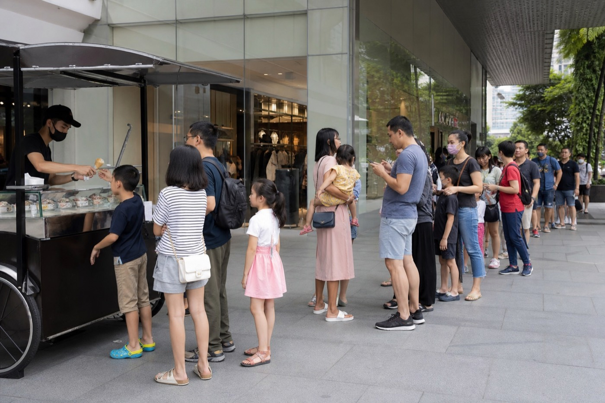
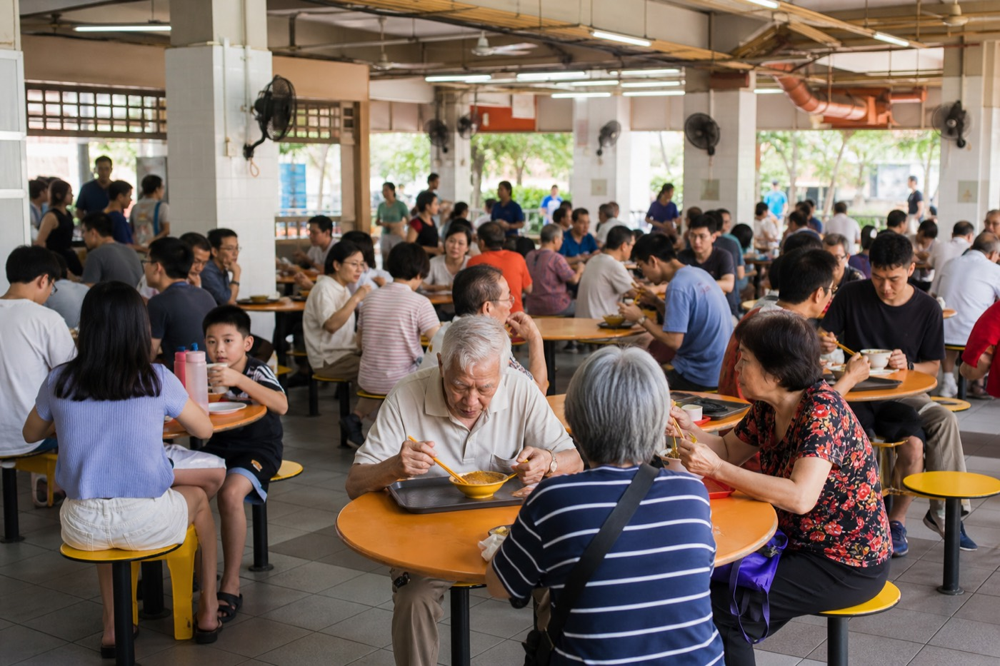
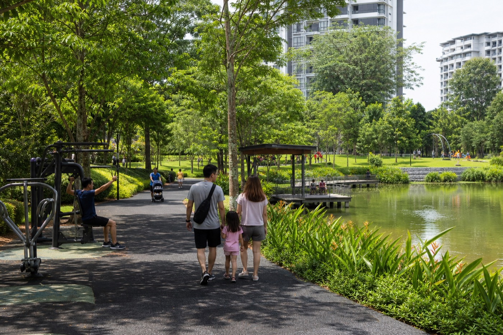
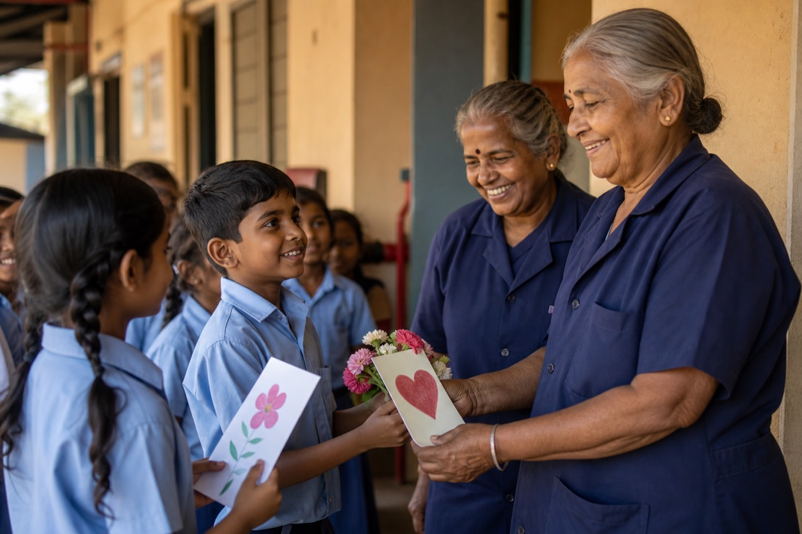

Session 1 · Reported PSLE English 2025 Day 1
1. Reading Aloud (different theme on purpose)
Given situation: You are reading this short news report aloud to your classmates during morning assembly.
P: inform · A: classmates · C: morning assembly · T: clear, serious but positive
Our Neighbourhood Watch organised a clean-up last Saturday. Volunteers swept the void deck and cleared litter near the playground. A Primary Six pupil said she felt proud when the area looked tidy again. Teachers reminded everyone that looking after common spaces is everyone's job. Small actions, done together, can make our estate a nicer place to live.
2. Stimulus-Based Conversation — photograph

- Q1 (photo): Is this a good place to sell ice cream? Why or why not?
- Q2 (experience): Would you be willing to join a long queue for something you wanted? Why or why not?
- Q3 (opinion): Do you think people in Singapore are orderly? Why or why not?
Dad prompt if too short: “Can you say more using PEEL — Point, Elaborate, Example, Link?”
Dad PEEL answer key (hide from Keefe)
Q1: Yes, I think this is a good place to sell ice cream. There is a long queue, which shows many people want to buy it, and a mall entrance means many shoppers pass by. For example, families with children often stop for a treat after shopping. So the location looks busy and suitable for sales.
Q2: It depends on how much I want it and how long the wait is. If it is something special, I might wait 15 to 20 minutes. Once I queued for a limited snack at a fair and felt it was worth it. But if the queue is very long, I would come back later or choose something else.
Q3: Generally yes — people in Singapore usually queue and follow rules in public. I can see in this photo that the customers are waiting in line rather than pushing. In MRT stations people also tend to let others alight first. Of course not everyone is perfect, but overall I think Singaporeans are quite orderly.
Session 2 · Reported PSLE English 2025 Day 2
1. Reading Aloud (different theme on purpose)
Given situation: You are reading this blog post aloud to friends who want tips on managing school stress.
P: advise · A: friends · C: informal sharing · T: friendly, calm, practical
When tests pile up, many pupils feel tense and tired. Taking short breaks can help more than staring at notes for hours. A walk, a glass of water, or five minutes of stretching often clears the mind. Healthy habits are not about being perfect every day. They are about recovering well so we can try again.
2. Stimulus-Based Conversation — photograph

- Q1 (photo): Why do you think the people chose to eat at this hawker centre?
- Q2 (experience): Do you prefer to eat home-cooked food or buy food from outside? Why?
- Q3 (opinion): Do you think children should learn how to cook? Why or why not?
Dad prompt if too short: “Can you say more using PEEL — Point, Elaborate, Example, Link?”
Dad PEEL answer key (hide from Keefe)
Q1: I think they chose this hawker centre because it is convenient and has many food choices. The tables look full, so the food is probably popular and affordable. For example, workers and families often eat there during lunch. So it seems like a practical place for a quick meal.
Q2: I prefer home-cooked food most days because it is usually healthier and I can eat with my family. Outside food is useful when we are busy or want something special. For example, we sometimes buy chicken rice on weekends. So my preference is home-cooked, with outside food as a treat.
Q3: Yes, I think children should learn basic cooking. It is a useful life skill and helps us eat more healthily. For example, learning to cook eggs or noodles means I can help at home. Therefore schools or parents should teach simple cooking, even if not every child becomes a chef.
Session 3 · Reported PSLE English 2024 Day 1
1. Reading Aloud (different theme on purpose)
Given situation: You are reading this announcement to encourage classmates to join a school reading challenge.
P: persuade · A: classmates · C: classroom announcement · T: enthusiastic, clear
This month, our school launches a two-week reading challenge. Pupils who finish three books can design a bookmark for the library display. Reading can take us to new places without leaving our chairs. Teachers hope more pupils will discover a book they love. Sign up at the library counter by Friday if you want to take part.
2. Stimulus-Based Conversation — photograph

- Q1 (photo): Would you be interested in visiting a park like the one in this photograph? Why?
- Q2 (experience): Do you like spending your free time outdoors? Tell me about it.
- Q3 (opinion): How should people behave in public spaces such as parks?
Dad prompt if too short: “Can you say more using PEEL — Point, Elaborate, Example, Link?”
Dad PEEL answer key (hide from Keefe)
Q1: Yes, I would be interested because the park looks clean and has space to walk and play. I can see families and an exercise corner, so there is something for different ages. For example, I could jog or sit by the pond. So it looks like a pleasant place to visit.
Q2: Yes, I like outdoor time when the weather is not too hot. I usually play soccer or walk around my estate after homework. Last week I felt more refreshed after playing outside than after gaming. That is why I try to go outdoors a few times a week.
Q3: People should keep parks clean, be considerate, and follow safety rules. They should not litter or play music too loudly. For example, cyclists should slow down near children. If everyone is considerate, public spaces stay enjoyable for all.
Session 4 · Reported PSLE English 2024 Day 2
1. Reading Aloud (different theme on purpose)
Given situation: You are a tour guide welcoming overseas visitors who have just arrived in Singapore. Read in a warm, welcoming tone.
P: welcome / introduce · A: overseas visitors · C: tour start · T: warm, clear, friendly
Welcome to Singapore. Many visitors notice how green our city feels even though it is busy. Parks, park connectors, and shaded walkways help people move around comfortably. Hawker centres are another favourite stop because you can taste many dishes in one place. We hope you enjoy exploring and feel at home while you are here.
2. Stimulus-Based Conversation — photograph

- Q1 (photo): Do you think activities like this are meaningful? Why?
- Q2 (experience): Tell me about a time you helped an elderly person or showed appreciation to someone who helps at school.
- Q3 (opinion): Would you like to spend more time with the elderly? Why or why not?
Dad prompt if too short: “Can you say more using PEEL — Point, Elaborate, Example, Link?”
Dad PEEL answer key (hide from Keefe)
Q1: Yes, I think these activities are meaningful because attendants work hard to keep the school safe and clean. Giving cards or flowers shows respect, not just taking their help for granted. For example, a simple thank you can make someone feel valued. So appreciation weeks are worth doing.
Q2: Once I helped carry bags for an elderly neighbour at our void deck. She looked tired after shopping. I felt happy when she smiled and thanked me. At school I also say thank you to the cleaners when I see them. Small gestures matter.
Q3: Yes, I would like to, because I can learn from their stories and they may feel less lonely. I enjoy talking to my grandparents about the past. For example, my grandmother teaches me simple recipes. Spending time with the elderly is good for both sides.
Session 5 · Reported PSLE 2022 theme + 2025 prelim pattern
1. Reading Aloud (different theme on purpose)
Given situation: You are reading this speech to motivate your CCA teammates before a competition.
P: motivate · A: teammates · C: before competition · T: energetic, encouraging
Winning feels exciting, but improving after mistakes matters just as much. Last season we lost because we rushed. Instead of blaming one another, we reviewed what went wrong and practised calmly. Courage is not only about finishing first. It is about standing up and trying again.
2. Stimulus-Based Conversation — photograph
- Q1 (photo): Should the child be playing a game at this time? Why or why not?
- Q2 (experience): Do you like using electronic devices for learning? Tell me about it.
- Q3 (opinion): What should students be careful about when using devices?
Dad prompt if too short: “Can you say more using PEEL — Point, Elaborate, Example, Link?”
Dad PEEL answer key (hide from Keefe)
Q1: I do not think the child should be playing a game while homework is unfinished. The open books suggest work still needs to be done. Playing first can make it harder to concentrate later. A short break after finishing a section would be better.
Q2: Yes, devices can help learning when used properly. I use them to check dictionary meanings or watch explanation videos. For example, a Maths video once helped me understand fractions. But I need limits so I do not get distracted by games.
Q3: Students should manage time, protect their eyes, and avoid unsafe websites. They should finish important work before entertainment. For example, my family uses a homework-first rule. Being careful helps devices stay useful instead of harmful.